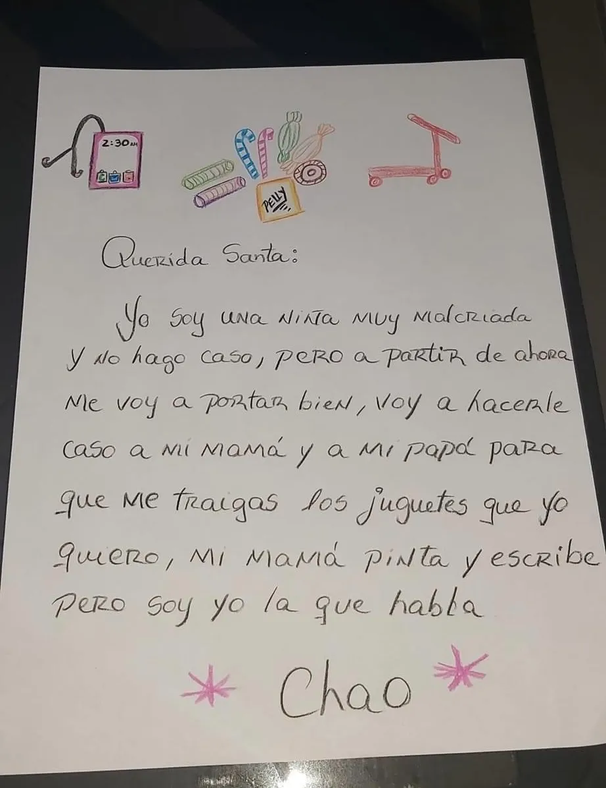
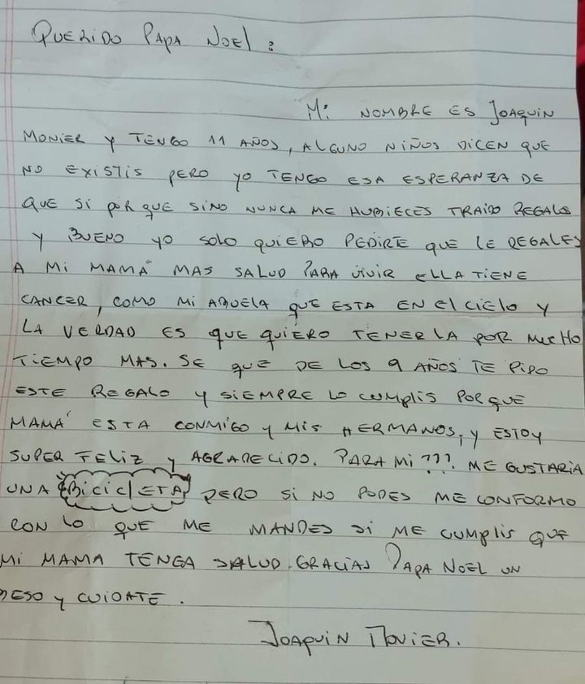

Cartas a Papá Noel
De: Sofía, 6 años - Colombia
Querido Papá Noel,
Me llamo Sofía, este año me porté muy bien, ayudé a mi mamá a recoger los juguetes y también hice la tarea todos los días. Mi perrito, Max, también se portó muy bien y espero que también le traigas un hueso grande. Me gustaría mucho que me traigas una muñeca que hable y que tenga un vestidito rosa, y también un osito de peluche para dormir con él todas las noches. Si no puedes traerme todo, no te preocupes, con que vengas a visitarnos ya estoy muy feliz. Espero que tú y tus renos estén bien y que no tengan frío en el Polo Norte. Te quiero mucho. Te voy a dejar galletas y leche para que descanses cuando llegues a mi casa. ¡Feliz Navidad!
De: Carla, 10 años - Argentina

De: David, 9 años - Chile

De: Joaquin, 11 años - España

De: Valentina, 9 años - México
Querido Papá Noel,
Este año fue un poco difícil para mi y mi familia, nos mudamos a una casa más pequeña. No sé si puedas traerme regalos, pero lo que más deseo es que mi mamá, mi papá y yo podamos estar juntos en navidad y podamos comer muchas cosas ricas. Si puedes, me gustaría un pollo asado bien grande para comer con mi familia y quiero un vestido azul para navidad. ¡Feliz Navidad!